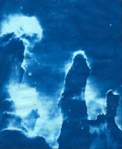
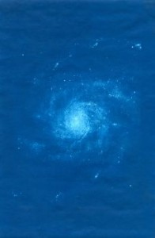
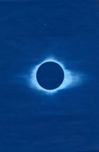
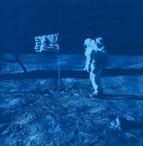
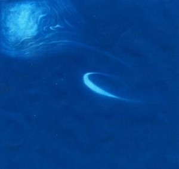

Time: 5 minutes in the sun, then overnight to dry
What you need:
• 8”x12” Sunprint paper
• Transparencies
• Access to a computer and a printer
The cool thing about Sunprint paper is that it catches every detail of the pictures you transfer, so even if you lose the color of the photo, you still get all the small parts, which make the resulting picture just as beautiful as the original.
For this project, I spent some time picking out good photos to use. I tried to find pictures where the color wasn’t essential to the photograph (for example, gorgeous pictures of the Northern Lights probably wouldn’t work very well!). When I found a few good ones, I printed them out on transparencies. Sometimes during this process, a picture will come out too light to be transferred well. The problem with space pictures especially is that a lot of the interesting details are not very black and white—there is a lot of grey and lighter colors. These don’t always show up very well on Sunprint paper. If that happens, you can print over the transparency a few times to darken the colors—just be sure to put the paper in the right way! That will make the details more striking and help turn it into a beautiful Sunprint. I found that if you print over the transparencies about four times, the lighter parts get dark enough to transfer well.
After that I just left them in the sun, washed them, and let them dry.

This is the Pinwheel Galaxy, a great example of a spiral galaxy. Spirals are one of three types of galaxies identified by Edwin Hubble (of the Hubble Telescope). They’re characterized by several (usually two) bright arms extending from a central bulge into the disc of the galaxy. The arms are brighter, as you can see in the picture, because stars are constantly forming inside them. The Milky Way is another spiral galaxy, although it’s known as a barred spiral, because the center forms a rectangular shape like a bar, from which the arms extend.
This one is Halley’s comet, the only short orbit comet visible to the naked eye. It comes around about every 75 to 76 years—a short enough span that it’s surprising that we can see it without a telescope! Halley’s Comet has been observed since at least 240 BC, but it was “discovered” in 1692 by Edward Halley, who was the first to recognize its periodicity. He took older predictions from other famous astronomers and predicted that the comet would return in 1758, which it did, at the last possible moment on December 25. The comet was last seen in 1986, and should be coming back our way in 2061, so keep your eyes peeled!

This image is of a total solar eclipse. Notice the ruffles in the corona—that’s the result of solar wind, in which particles from the Sun’s atmosphere flow outward into space. This is always occurring, of course, but it is most visible during an eclipse. Solar eclipses happen when the moon passes between the Earth and the Sun, so that the Sun is partially or totally covered. It only happens during new moons and lasts no more than 7 minutes and 31 seconds—the longest in the 21st century occurred earlier this year, lasting 6 min 39 sec. Between two and five eclipses happen a year, and up to two of those will be total. Total solar eclipses like this are very rare and visible only from specific areas. People travel all over the world to see them!

This picture was taken on July 20, 1969, the day that Neil Armstrong and the crew of Apollo 11 landed on the Moon. Prior to this, the US had launched ten other Apollo missions, five of them manned, none of which had landed on the Moon. Apollo 11 was the first manned landing. Funny fact: prior to being renamed Eagle (the lunar landing vehicle on the mission) and Columbia (the command module), the modules were known as Snowcone and Haystack.
This, of course, is a photograph of the Earth from space. Earth is the third planet from the Sun and the fifth largest of the eight planets in the Solar System. It formed about 4.54 billion years ago, and a billion years later there was life on the planet. An interesting fact: everyone knows that the Earth has one moon—but not everyone is aware that it also has two other orbiting asteroids, Cruithne and AA! Neither has a regular orbit like the Moon does, but both move around the Earth in different ways.
Text by Jasmine Mark

Tags: Photography, transparency